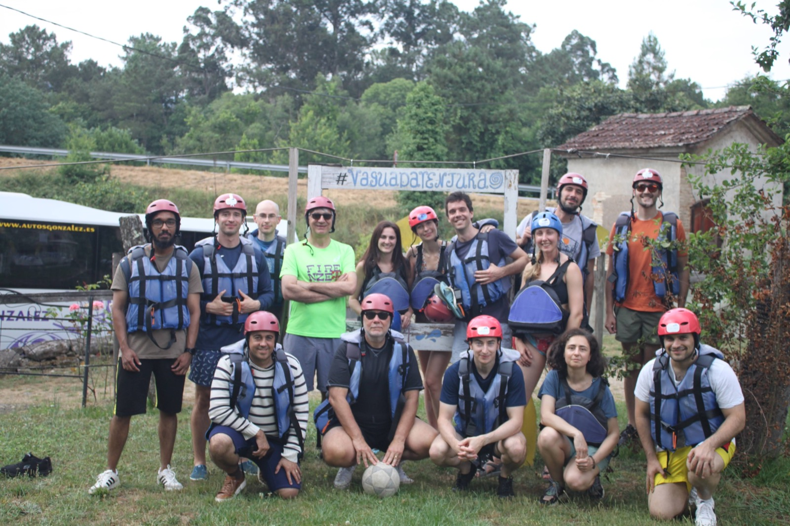
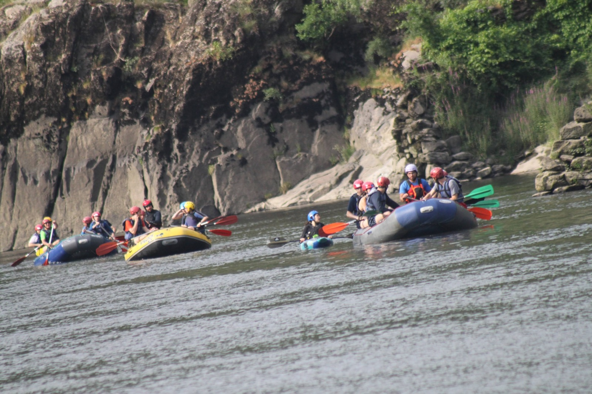

XXIX Workshop on Dynamic Macroeconomics, June 23-25, 2026, Vigo, Spain
2026-09-07
With a group of good friends (Tim Kehoe (University of Minnesota), Árpád Ábráhám (Bristol), Jaime Alonso-Carrera (Universidade de Vigo), Sergio Feijoo Moreira (Bristol), Finn Kydland (UCSB), Nick Pretnar (UCSDB) and J. Víctor Ríos-Rull (University of Pensylvania)), I have organized the XXIXth edition of the Vigo Workshop on Dynamic Macroeconomics. (Jaime is the real organiser of the workshop).
The workshop took place in the city of Vigo. It is (to my taste) the perfect combination of good economics (a lot of) and fun (a lot of). Presentations are done by PhD students.
As far as economics is concerned, here was the program:
Tuesday, 23 June
9:30-10:30: Isabel Figueiras (Universitat Pompeu Fabra) “Capital Market Integration for Innovation-Led Growth”
10:30-11:30: Juan Segura (CEMFI) “Financial Frictions, Innovation and Growth”
11:30-12:00: Break
12:00-13:00: José Pedro Garcia (European University Institute) “Costs of Adjustment and Firms' Responsiveness: Evidence from a Labour Market Reform”
13:00-14:00: Nello Esposito (University of Naples Federico II) “Employment Protection and Consumption: Evidence from Italy”
14:00-15:30: Lunch
15:30-16:30: Maciej Sztachera (Goethe University Frankfurt) “Hours, wages, and multipliers”
16:30-17:30: Gemma Harris (Paris School of Economics) “Efficiency and Distributional Costs of Rising Public Debt: the Role of Entrepreneurs”
17:30-18:00: Break
18:00-19:00: Luca Looser (Universitat Pompeu Fabra) “Family-led Structural Change”
Wednesday, 24 June
9:30-10:30: Piero De Dominicis (Bocconi University) “The Micro and Macro Implications of Early Career Skill Mismatch”
10:30-11:30: Paul David Boll (University of Warwick) “Career ladders and the skill structure of the labor market”
11:30-12:00: Break
12:00-13:00: Marta Domínguez-Jiménez (CEMFI) “The demographic origins of premature deindustrialization”
13:00-14:00: Elena Casanovas (University College London) “Scope Economies and the Growth of Multi-Market Firms”
14:00: Lunch
Thursday, 25 June
9:30-10:30: Wenxuan Wang (Toulouse School of Economics) “Matching Efficiency and Unemployment Fluctuations”
10:30-11:30: Eugenio Renedo Sánchez (CEMFI) “Human Capital Portability and Wage Dynamics”
11:30-12:00: Break
12:00-13:00: Paula Patzelt (London School of Economics) “No Single Market for Electricity: Aggregate Productivity Costs of Price Dispersion in Europe”
13:00-14:00: Ridhwaan Korimbocus (University of Bristol) “Carbon Taxes and Clean Technology Transition in an International Environment”
14:00: Lunch

